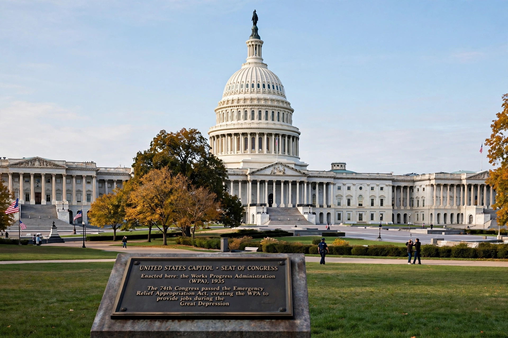

| Enacted | 1989 |
|---|---|
| Jurisdiction | United States federal government |
| Purpose | Protect federal employees who disclose wrongdoing |
The Whistleblower Protection Act of 1989 (WPA) is a United States federal law that protects federal employees and applicants who disclose information they reasonably believe evidences a violation of law, gross mismanagement, gross waste of funds, abuse of authority, or a substantial and specific danger to public health or safety.

The Act prohibits retaliation — personnel actions such as dismissal, demotion or reassignment — against whistleblowers. Enforcement runs through the Office of Special Counsel, which can investigate and seek corrective action, and the Merit Systems Protection Board, where employees may appeal. Disclosures to Congress and inspectors general are protected.
Building on protections in the Civil Service Reform Act of 1978, the WPA was passed unanimously and signed by President George H. W. Bush. The Whistleblower Protection Enhancement Act of 2012 strengthened it, closing loopholes created by court rulings, clarifying that disclosures made in the normal course of duties or to supervisors are covered, and extending protections to some Transportation Security Administration and intelligence-related contexts separately addressed by other statutes.